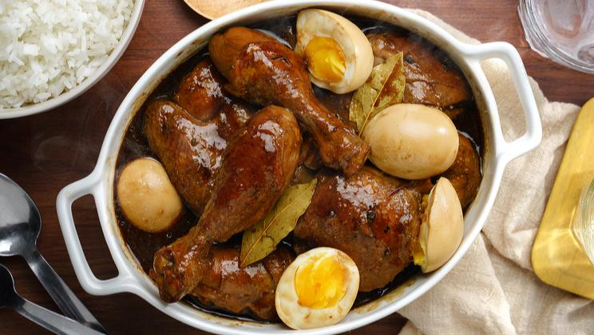

Chicken Adobo With Egg Recipe
What is Chicken Adobo With Egg?
“Chicken Adobo with Egg” is a popular Filipino dish that is usually served for breakfast or lunch.
It is made by
marinating chicken slices in a mixture of soy sauce, garlic, and whole peppercorn.
The chicken is then cooked in chicken
broth, vinegar, and bay leaves.
Hard-boiled eggs are added to the dish towards the end of the cooking process.
Ingredients
2 lbs. chicken thighs cut into serving pieces
5 pieces hard boiled eggs
2 cups chicken broth
5 tablespoons dark soy sauce
3 tablespoons vinegar
6 to 8 cloves garlic crushed
1 tablespoon whole peppercorn
4 pieces dried bay leaves
Salt to taste optional
3 tablespoons cooking oil
Instructions / How to Cook
1. Combine chicken, soy sauce, whole peppercorn, and half of the crushed garlic in a large bowl. Mix well and ensure that the chicken gets coated with the marinade. Cover the bowl and marinate for at least 1 hour. Note: the longer the time to marinate, the better.
2. Heat oil in a cooking pot.
3. Add the remaining crushed garlic. Cook until the garlic starts to turn brown.
4. Add the marinated chicken including the marinade. Stir and cook for 3 minutes.
5. Pour the chicken broth into the pot. Let boil.
6. Add the bay leaves and pour the vinegar into the pot. Let boil. Stir and cover the pot. Continue to cook until the chicken gets tender and the sauce reduces to your preference.
7. Add salt (only if needed) and then add the eggs. Stir and cook for 2 minutes more.
8. Transfer to a serving plate. Serve.